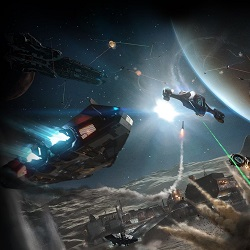

Все корабли в игре полностью модифицируемы. Почти любой модуль можно заменить на один из его вариантов, либо вообще на что-нибудь особенное. В зависимости от задач корабли экипируют тем или иным оборудованием. Одни варианты экипировки получаются удачнее, чем другие и мы поделимся ими в этом разделе.

Экипировка кораблей
Выберите строку с названием интересующей вас модели и кликните мышкой.
Cobra Mk3
Основная роль: универсал
Игровой этап для эффективного использования:наиболее ранняя игра
Зависимость роли от инженерных работ:низкая
- Сильные стороны модели:
- очень дешовый;
- лучшая замена для Сайдвиндера;
- Способен выполнять все виды задач.
Конфигурацию за 1 миллион можно увидеть тут.
Максимальную конфигурацию от CMDR Kaminodenshi можно увидеть тут.
Diamondback Explorer
Основная роль:Исследователь
Игровой этап для эффективного использования:ранний
Зависимость роли от инженерных работ:средняя
- Сильные стороны модели:
- очень эффективный исследователь для всех этапов игры;
- дешовый;
- для достижения высокой дальности прыжка достаточно только улучшения FSD.
Максимальную конфигурацию от CMDR Abbat76 можно увидеть тут.
Asp Explorer
Основная роль:Исследователь
Игровой этап для эффективного использования:ранний
Зависимость роли от инженерных работ:средняя
- Сильные стороны модели:
- очень эффективный исследователь для всех этапов игры;
- удобный в использовании;
- можно поставить быстрый топливозаправщик;
- для достижения высокой дальности прыжка достаточно только улучшения FSD.
Максимальную конфигурацию от CMDR Abbat76 можно увидеть тут.
Krait Phantom
Основная роль:Исследователь, универсал, боец.
Игровой этап для эффективного использования:средний
Зависимость роли от инженерных работ:выше среднего
- Особенности модели:
- очень эффективный исследователь;
- высокая скорость и маневренность;
- можно поставить быстрый топливозаправщик;
- много дополнительных слотов;
- приятный дизайн.
Конфигурацию исследователя от CMDR Abbat76 можно увидеть тут.
Конфигурацию исследователя от CMDR Kaminodenshi можно увидеть тут.
Конфигурацию исследователя от CMDR Ddedoss можно увидеть тут.
Anaconda
Основная роль:Исследователь, универсал, боец.
Игровой этап для эффективного использования:средний/поздний
Зависимость роли от инженерных работ:очень высокая
- Особенности модели:
- самая высокая дальность прыжка в игре;
- Очень много дополнительных слотов;
- можно поставить самый мощный топливозаправщик;
- много оружейных слотов;
- самый универсальный корабль, подходящий для абсолютно любых ролей;
- принадлежит к самому тяжелому классу игровых кораблей, интересный дизайн.
- пока единственный кораль в игре, у которого детально проработана модель повреждений.
Конфигурацию (рельсо-пушечная) можно увидеть тут.
Конфигурацию исследователя можно увидеть тут.
Python
Основная роль:Универсал, средний торговец, боец.
Игровой этап для эффективного использования:средний
Зависимость роли от инженерных работ:средняя (в зависимости от роли)
- Особенности модели:
- самый большой трюм среди кораблей, способных стыковаться с малыми станциями;
- Одни из самых лучших среди средних кораблей Силовая и Распределитель питания;
- Сбалансированный по всем параметрам;
- сильное для среднего корабля вооружение;
- приятный дизайн.
Вариант универсальной/боевой конфигурации от CMDR Kaminodenshi можно увидеть тут.
Базовый вариант универсальной конфигурации без инжениринга от CMDR Abbat76 можно увидеть тут.
Federal Corvette
Основная роль:Боец.
Игровой этап для эффективного использования:поздний
Зависимость роли от инженерных работ:высокая
- Особенности модели:
- Самая высокая маневренность среди "большой четверки" - кораблей тяжелого класса;
- Два гигантских оружейных слота - больше, чем у любого другого корабля в игре;
- Мощная силовая и распределитель питания;
- Возможность установки ангара для истребителя;
- довольно удачное расположение оружейных слотов в корпусе корабля.
Боевой внутрисистемный вариант c призматическим щитом в конфигурации от CMDR Abbat76 можно увидеть тут.
Многоцелевой универсальный вариант конфигурации от CMDR Abbat76 можно увидеть тут.
Еще один универсальный вариант конфигурации от CMDR Abbat76 можно увидеть тут.
Imperial Cutter
Основная роль:Боец, торговец, шахтер.
Игровой этап для эффективного использования:поздний
Зависимость роли от инженерных работ:высокая (в зависимости от роли)
- Особенности модели:
- Самая высокая скорость среди "большой четверки" - кораблей тяжелого класса;
- много средних оружейных слотов, нет маленьких слотов;
- мощная силовая и двигатели;
- самый мощный силовой щит в игре;
- возможность установки ангара для истребителя;
- возможность сделать самый большой размер трюма в игре;
- самый мощный масс-лок фактор в игре (27 единиц);
- красивый дизайн;
Боевой вариант конфигурации от CMDR Kaminodenshi можно увидеть тут.
Alliance Chieftain
Основная роль:Боец, Anty-Xeno
Игровой этап для эффективного использования:средний
Зависимость роли от инженерных работ:средняя/высокая (в зависимости от роли)
- Особенности модели:
- высокая маневренность;
- много оружейных слотов;
- крепкий корпус, много ХП;
- высокая скорость на форсаже;
- двигатели вынесены из корпуса на пилоны.
АХ-вариант конфигурации от CMDR Abbat76 можно увидеть тут.
Боевой вариант конфигурации от CMDR Abbat76 можно увидеть тут.
Type-9 Heavy
Основная роль:Шахтер, Торговец
Игровой этап для эффективного использования:средний
Зависимость роли от инженерных работ:низкая/средняя (в зависимости от роли)
- Особенности модели:
- Огромный трюм, приближающийся к трюму Имперского Каттера;
- Большая прочность;
- много дополнительных слотов;
- очень низкая скорость и маневренность;
Шахтерский (проходческий)вариант конфигурации от CMDR Abbat76 можно увидеть тут.
Type-10 Defender

Type-10 Defender
Основная роль:Шахтер, Торговец, Боец, Анти-Ксено: Универсал.
Игровой этап для эффективного использования:средний
Зависимость роли от инженерных работ:низкая/высока (в зависимости от роли)
- Особенности модели:
- Самая толстая броня из всех кораблей, доступным игрокам;
- Большой трюм;
- Очень большая прочность;
- Много дополнительных слотов;
- Максимальное число слотов вооружения: 4 больших, 3 средних, 2 малых;
- Очень низкая скорость и маневренность;
- Фактор блокировки массой сопоставим с таковым у Имперского Каттера;
- Возможность установки стребителя;
АХ-вариант с Осколочными пушками стражей от CMDR Abbat76 можно увидеть тут.